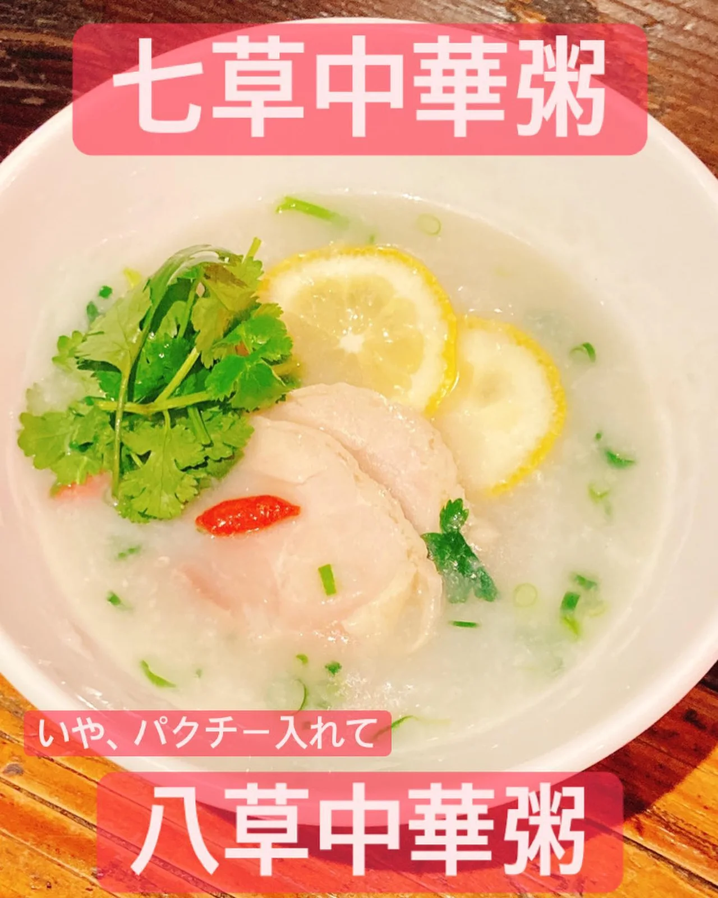
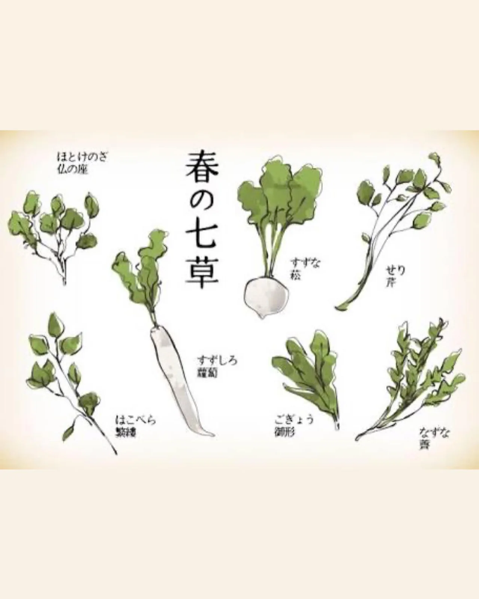

2021年1月6日
１月７日、8日は、


１月７日、8日は、 パクチー入れた、八草中華粥やります！！ パクチー苦手な方は、七草中華粥をご用意させていただいております！ こんな世の中、無病息災を願ってみませんか？みなsay、waht? １０人前ご用意させていただいております！ お待ちしてまーす🍺 #中華粥 #七草粥 #中華バル#中華#中華料理#福島区グルメ#路地裏#B級グルメ#中国#チャイニーズ#路地裏チャイニーズ有馬#有馬#シュウマイ#餃子#点心#フォローミー#followme#パクチー